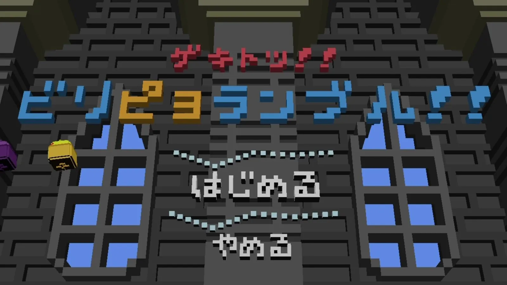
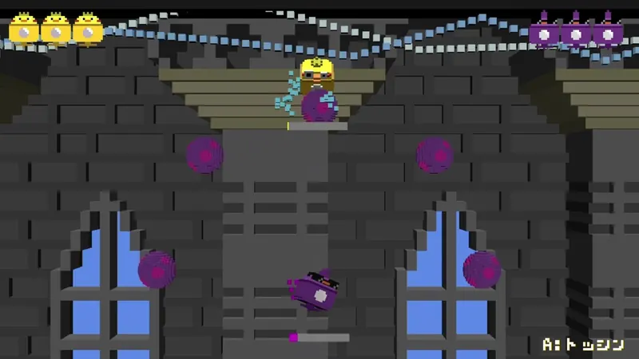
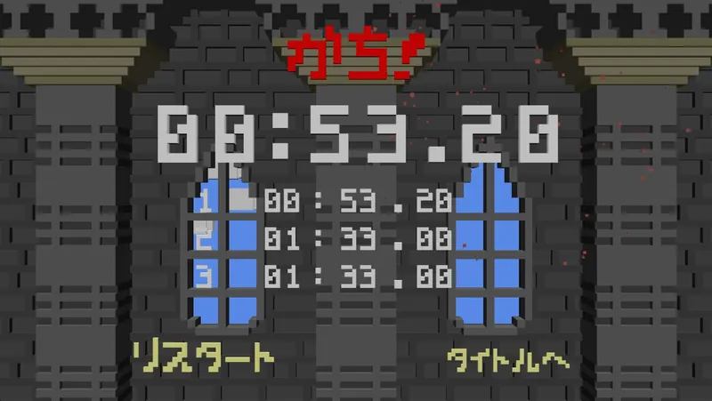

チーム作品紹介 / 2年生編



- 開発概要
- 開発環境DirectX12 // CoreEngine
- 開発人数3人
- 制作期間1ヶ月
作品紹介・こだわりポイント
プレイヤーは回転しながら敵にゲキトツし、雷があるステージ 4 隅にぶつけるアクションゲームです。UI を含むゲーム内にある全てがボクセルで構成されています。
タイトルシーンをメインとして担当しました。タイトルからユーザーに気を引いてもらえるように背景で敵とプレイヤーが追いかけっこをしている演出を入れたり、ボクセルによる稲妻の演出に特に力を入れました。